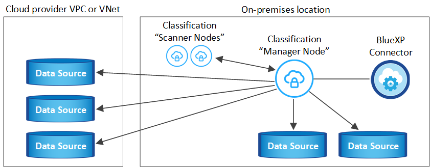

版本資訊
版本資訊
在可存取網際網路的主機上安裝 BlueXP 分類
 建議變更
建議變更
請完成幾個步驟、在您網路中的 Linux 主機或雲端中有網際網路存取權的 Linux 主機上安裝 BlueXP 分類。您必須在網路或雲端中手動部署Linux主機、才能完成此安裝。
如果您偏好使用內部部署的 BlueXP 分類執行個體來掃描內部部署的 ONTAP 系統、則內部部署安裝可能是一個很好的選擇、但這不是一項要求。無論您選擇哪種安裝方法、軟體的運作方式都完全相同。
BlueXP 分類安裝指令碼會先檢查系統和環境是否符合必要的先決條件。如果所有先決條件都符合、則會開始安裝。如果您想要獨立於執行 BlueXP 分類安裝來驗證先決條件、您可以下載個別的軟體套件、只測試先決條件。 "瞭解如何檢查您的 Linux 主機是否已準備好安裝 BlueXP 分類"。
在內部部署的Linux主機_上的典型安裝具有下列元件和連線。

Linux主機_在雲端_上的典型安裝具有下列元件和連線。

對於掃描PB資料的大型組態、您可以納入多個主機、以提供額外的處理能力。使用多個主機系統時、主要系統稱為_Manager節點_、而提供額外處理能力的其他系統稱為_scaliple nodes _。
請注意、您也可以 "將 BlueXP 分類安裝在無法存取網際網路的內部部署網站上" 完全安全的網站。
快速入門
請依照下列步驟快速入門、或向下捲動至其餘部分以取得完整詳細資料。
 建立連接器
建立連接器如果您還沒有連接器、 "在內部部署連接器" 在網路中的Linux主機上、或是在雲端的Linux主機上。
您也可以與雲端供應商建立Connector。請參閱 "在 AWS 中建立連接器"、 "在 Azure 中建立 Connector"或 "在GCP中建立連接器"。
 檢閱先決條件
檢閱先決條件確保您的環境符合先決條件。這包括執行個體的傳出網際網路存取、連接器與透過連接埠 443 的 BlueXP 分類之間的連線、等等。 請參閱完整清單。
您也需要符合的Linux系統 符合下列需求。
 下載並部署 BlueXP 分類
下載並部署 BlueXP 分類從 NetApp 支援網站 下載雲端 BlueXP 分類軟體、並將安裝程式檔案複製到您打算使用的 Linux 主機。然後啟動安裝精靈、並依照提示部署 BlueXP 分類執行個體。
 訂閱 BlueXP 分類服務
訂閱 BlueXP 分類服務BlueXP 分類掃描的前 1 TB 資料可免費使用 30 天。您必須向雲端供應商Marketplace訂閱、或向NetApp訂購BYOL授權、才能在該時間點之後繼續掃描資料。
建立連接器
安裝和使用 BlueXP 分類之前、需要 BlueXP Connector 。在大多數情況下、您可能會在嘗試啟動 BlueXP 分類之前先設定 Connector 、因為大部分的原因 "BlueXP功能需要連接器"但有些情況下您需要立即設定一個。
若要在雲端供應商環境中建立一個、請參閱 "在 AWS 中建立連接器"、 "在 Azure 中建立 Connector"或 "在GCP中建立連接器"。
有些情況下、您必須使用部署在特定雲端供應商中的Connector：
-
在 AWS 、 Amazon FSX for ONTAP 或 AWS S3 儲存區中掃描 Cloud Volumes ONTAP 中的資料時、您會在 AWS 中使用 Connector 。
-
在 Azure 或 Azure NetApp Files 中掃描 Cloud Volumes ONTAP 資料時、您會使用 Azure 中的 Connector 。
若為Sfor Same、則必須將其部署在您要掃描的磁碟區所在的相同區域。Azure NetApp Files
-
在Cloud Volumes ONTAP GCP中掃描資料時、請使用GCP中的Connector。
內部ONTAP 系統、非NetApp檔案共用、一般S3物件儲存、資料庫、OneDrive資料夾、SharePoint帳戶及Google雲端硬碟帳戶均可使用下列任何一種Cloud Connector進行掃描。
請注意、您也可以 "在內部部署連接器" 在您網路中的 Linux 主機或雲端中的 Linux 主機上。有些打算在內部部署上安裝 BlueXP 分類的使用者也可以選擇在內部部署上安裝 Connector 。
如您所見、您可能需要使用某些情況 "多個連接器"。
安裝 BlueXP 分類時、您需要 Connector 系統的 IP 位址或主機名稱。如果您在內部部署中安裝了Connector、您將會獲得這些資訊。如果連接器部署在雲端、您可以從BlueXP主控台找到這項資訊：按一下「說明」圖示、選取*「支援*」、然後按一下「* BlueXP Connector*」。
準備Linux主機系統
BlueXP 分類軟體必須在符合特定作業系統需求、 RAM 需求、軟體需求等的主機上執行。Linux主機可以位於您的網路或雲端。
確保您可以繼續執行 BlueXP 分類。BlueXP 分類機器必須持續運作、才能持續掃描您的資料。
-
與其他應用程式共用的主機不支援 BlueXP 分類、主機必須是專用主機。
-
在內部環境中建置主機系統時、您可以根據計畫執行 BlueXP 分類掃描的資料集大小、從三種系統大小中進行選擇。
系統大小 CPU RAM（交換記憶體必須停用） 磁碟 * 超大 *
32 個 CPU
128 GB RAM
1 TiB SSD on / 、 or
-100 GiB 可在 /opt 上取得
-895 GiB 可在 /var/lib/泊 塢視窗中取得
/tmp 上 5 GiB* 大 *
16個CPU
64 GB RAM
500 GiB SSD on / 、 or
-100 GiB 可在 /opt 上取得
-395 GiB 可在 /var/lib/Docker 上取得
/tmp 上 5 GiB* 中 *
8個CPU
32 GB RAM
200 GiB SSD on / 、 or
-50 GiB 可在 /opt 上取得
-145 GiB 可在 /var/lib/泊 塢視窗中取得
/tmp 上 5 GiB* 小 *
8個CPU
16 GB RAM
100 GiB SSD on / 、 or
-50 GiB 可在 /opt 上取得
-45 GiB 可在 /var/lib/泊 塢視窗中取得
/tmp 上 5 GiB請注意、使用較小系統時會有限制。請參閱 "使用較小的執行個體類型" 以取得詳細資料。
-
在雲端部署運算執行個體以進行 BlueXP 分類安裝時、我們建議系統符合上述「大型」系統需求：
-
* AWS EC2 執行個體類型 * ：我們建議使用「 m6i.4xlarge 」。 "請參閱其他 AWS 執行個體類型"。
-
* Azure VM Size* ：我們建議使用「 Standard_D16s_v3 」。 "請參閱其他 Azure 執行個體類型"。
-
* GCP 機器類型 * ：我們建議使用「 n2-Standard-16 」。 "請參閱其他 GCP 執行個體類型"。
-
-
* UNIX 資料夾權限 * ：需要下列最低 UNIX 權限：
資料夾 最低權限 /tmp
rwxrwxrwt/opt
rwxr-xr-x/var/lib/泊 塢視窗
rwx------/usr/lib/systemd/system
rwxr-xr-x -
* 作業系統 * ：
-
下列作業系統需要使用 Docker Container 引擎：
-
Red Hat Enterprise Linux 版本 7.8 和 7.9
-
CentOS 版本 7.8 和 7.9
-
Ubuntu 22.04 （需要 BlueXP 分級版本 1.23 或更新版本）
-
-
下列作業系統需要使用 Podman Container 引擎、而且需要 BlueXP 分級版本 1.26 或更新版本：
-
Red Hat Enterprise Linux 9.0 、 9.1 和 9.2 版
請注意、目前使用 RHEL 9.x 時不支援下列功能：
-
安裝在黑暗的地點
-
分散式掃描；使用主要掃描器節點和遠端掃描器節點
-
-
-
-
* Red Hat Subscription Management* ：主機必須向 Red Hat Subscription Management 註冊。如果系統尚未註冊、則無法在安裝期間存取儲存庫以更新所需的協力廠商軟體。
-
* 其他軟體 * ：安裝 BlueXP 分類之前、您必須在主機上安裝下列軟體：
-
* NTP 考量 * ： NetApp 建議將 BlueXP 分類系統設定為使用網路時間傳輸協定（ NTP ）服務。必須在 BlueXP 分類系統和 BlueXP Connector 系統之間同步時間。
-
* Firewalld考量事項*：如果您打算使用
firewalld、建議您在安裝 BlueXP 分類之前先啟用此功能。執行下列命令進行設定firewalld因此與 BlueXP 分類相容：firewall-cmd --permanent --add-service=http firewall-cmd --permanent --add-service=https firewall-cmd --permanent --add-port=80/tcp firewall-cmd --permanent --add-port=8080/tcp firewall-cmd --permanent --add-port=443/tcp firewall-cmd --reload
如果您打算使用其他 BlueXP 分類主機做為掃描器節點、請在此時將這些規則新增至主要系統：
firewall-cmd --permanent --add-port=2377/tcp firewall-cmd --permanent --add-port=7946/udp firewall-cmd --permanent --add-port=7946/tcp firewall-cmd --permanent --add-port=4789/udp
請注意、每當您啟用或更新時、都必須重新啟動 Docker 或 Podman
firewalld設定：

|
安裝後無法變更 BlueXP 分類主機系統的 IP 位址。 |
從 BlueXP 分類啟用輸出網際網路存取
BlueXP 分類需要外傳網際網路存取。如果您的虛擬或實體網路使用 Proxy 伺服器進行網際網路存取、請確定 BlueXP 分類執行個體具有傳出網際網路存取權、以聯絡下列端點。
| 端點 | 目的 |
|---|---|
https://api.bluexp.netapp.com |
與包括NetApp帳戶在內的BlueXP服務通訊。 |
https://netapp-cloud-account.auth0.com https://auth0.com |
與BlueXP網站通訊以進行集中式使用者驗證。 |
https://support.compliance.api.bluexp.netapp.com/\https://hub.docker.com https://auth.docker.io https://registry-1.docker.io https://index.docker.io/\https://dseasb33srnrn.cloudfront.net/\https://production.cloudflare.docker.com/ |
提供軟體映像、資訊清單、範本的存取、以及傳送記錄和度量資料的功能。 |
https://support.compliance.api.bluexp.netapp.com/ |
讓 NetApp 能夠從稽核記錄串流資料。 |
https://github.com/docker https://download.docker.com |
提供泊塢視窗安裝的必要套件。 |
http://mirror.centos.org http://mirrorlist.centos.org http://mirror.centos.org/centos/7/extras/x86_64/Packages/container-selinux-2.107-3.el7.noarch.rpm |
提供 CentOS 安裝的必要套件。 |
http://packages.ubuntu.com/ |
提供 Ubuntu 安裝的必要套件。 |
確認已啟用所有必要的連接埠
您必須確保所有必要的連接埠都已開啟、以便在 Connector 、 BlueXP 分類、 Active Directory 和資料來源之間進行通訊。
| 連線類型 | 連接埠 | 說明 |
|---|---|---|
Connector <> BlueXP 分類 |
8080（TCP）、443（TCP）及80 |
Connector 的防火牆或路由規則必須允許透過連接埠 443 進出的流量進出 BlueXP 分類執行個體。請確定連接埠8080已開啟、以便您在BlueXP中查看安裝進度。 |
連接器<> ONTAP -叢集（NAS） |
443（TCP） |
BlueXP會使用ONTAP HTTPS探索叢集。如果使用自訂防火牆原則、則必須符合下列需求：
|
BlueXP 分類 <> ONTAP 叢集 |
|
BlueXP 分類需要與每個 Cloud Volumes ONTAP 子網路或內部 ONTAP 系統建立網路連線。Cloud Volumes ONTAP 的防火牆或路由規則必須允許來自 BlueXP 分類執行個體的傳入連線。 請確定這些連接埠已開放給 BlueXP 分類執行個體：
NFS Volume 匯出原則必須允許從 BlueXP 分類執行個體存取。 |
BlueXP 分類 <> Active Directory |
389（TCP與udp）、636（TCP）、3268（TCP）和3269（TCP） |
您必須已為公司中的使用者設定Active Directory。此外、 BlueXP 分類需要 Active Directory 認證來掃描 CIFS 磁碟區。 您必須擁有Active Directory的資訊：
|
如果您使用多個 BlueXP 分類主機來提供額外的處理能力來掃描資料來源、則需要啟用其他連接埠 / 通訊協定。 "請參閱其他連接埠需求"。
在 Linux 主機上安裝 BlueXP 分類
對於一般組態、您將在單一主機系統上安裝軟體。 請參閱此處的步驟。

對於掃描PB資料的大型組態、您可以納入多個主機、以提供額外的處理能力。 請參閱此處的步驟。

請參閱 準備Linux主機系統 和 檢閱先決條件 以取得部署 BlueXP 分類之前的完整需求清單。
只要執行個體具備網際網路連線能力、即可自動升級至 BlueXP 分類軟體。
|
|
當軟體安裝在內部部署時、 BlueXP 分類目前無法掃描 S3 儲存區、 Azure NetApp Files 或適用於 ONTAP 的 FSX 。在這些情況下、您需要在雲端和中部署個別的 Connector 和 BlueXP 分類執行個體 "在連接器之間切換" 適用於不同的資料來源。 |
一般組態的單一主機安裝
在單一內部部署主機上安裝 BlueXP 分類軟體時、請檢閱需求並遵循這些步驟。
"觀看此影片" 以瞭解如何安裝 BlueXP 分類。
請注意、安裝 BlueXP 分類時會記錄所有安裝活動。如果您在安裝期間遇到任何問題、您可以檢視安裝稽核記錄的內容。它是寫入的 /opt/netapp/install_logs/。 "請參閱此處的更多詳細資料"。
-
確認您的Linux系統符合 主機需求。
-
確認系統已安裝兩個必要的軟體套件（ Docker Engine 或 Podman 和 Python 3 ）。
-
請確定您擁有Linux系統的root權限。
-
如果您使用Proxy存取網際網路：
-
您需要Proxy伺服器資訊（IP位址或主機名稱、連線連接埠、連線配置：HTTPS或http、使用者名稱和密碼）。
-
如果 Proxy 正在執行 TLS 攔截、您必須知道儲存 TLS CA 憑證的 BlueXP 分類 Linux 系統路徑。
-
Proxy 必須是非透明的、我們目前不支援透明的 Proxy 。
-
使用者必須是本機使用者。不支援網域使用者。
-
-
確認您的離線環境符合所需 權限與連線能力。
-
從下載 BlueXP 分類軟體 "NetApp 支援網站"。您應該選取的檔案名稱為* datASENSE-installer-ze.tar.gz*<version> 。
-
將安裝程式檔案複製到您打算使用的 Linux 主機（使用「 XCP 」或其他方法）。
-
在主機上解壓縮安裝程式檔案、例如：
tar -xzf DATASENSE-INSTALLER-V1.25.0.tar.gz -
在BlueXP中、選取*管理>分類*。
-
按一下「啟動資料感應」。

-
根據您是在雲端準備的執行個體上安裝 BlueXP 分類、還是在內部部署準備的執行個體上安裝 BlueXP 分類、請按一下適當的 * 部署 * 按鈕來開始安裝 BlueXP 分類。

-
此時會顯示「部署內部部署的資料感知」對話方塊。複製提供的命令（例如：
sudo ./install.sh -a 12345 -c 27AG75 -t 2198qq）並貼到文字檔中、以便日後使用。然後按一下*關閉*以關閉對話方塊。 -
在主機上、輸入您複製的命令、然後依照一系列提示操作、或者您也可以提供完整命令、包括所有必要參數做為命令列引數。
請注意、安裝程式會執行預先檢查、以確保您的系統和網路需求已準備就緒、以便順利安裝。 "觀看此影片" 瞭解預先檢查的訊息和影響。
根據提示輸入參數： 輸入完整命令： -
貼上您從步驟 7 複製的命令：
sudo ./install.sh -a <account_id> -c <client_id> -t <user_token>如果您要安裝在雲端執行個體上（而非內部部署）、請新增
--manual-cloud-install <cloud_provider>。 -
輸入 BlueXP 分類主機機器的 IP 位址或主機名稱、以便 Connector 系統存取。
-
輸入 BlueXP Connector 主機機器的 IP 位址或主機名稱、以便 BlueXP 分類系統存取。
-
根據提示輸入 Proxy 詳細資料。如果您的 BlueXP Connector 已使用 Proxy 、則無需在此再次輸入此資訊、因為 BlueXP 分類將自動使用 Connector 使用的 Proxy 。
或者、您也可以預先建立完整命令、提供必要的主機和 Proxy 參數：
sudo ./install.sh -a <account_id> -c <client_id> -t <user_token> --host <ds_host> --manager-host <cm_host> --manual-cloud-install <cloud_provider> --proxy-host <proxy_host> --proxy-port <proxy_port> --proxy-scheme <proxy_scheme> --proxy-user <proxy_user> --proxy-password <proxy_password> --cacert-folder-path <ca_cert_dir>變數值：
-
Account_id = NetApp 帳戶 ID
-
client_id = Connector Client ID （如果用戶端 ID 尚未出現、請將字尾「 Clients 」新增至用戶端 ID ）
-
user_tokon= JWT使用者存取權杖
-
DS_host = BlueXP 分類 Linux 系統的 IP 位址或主機名稱。
-
cm_host= BlueXP Connector系統的IP位址或主機名稱。
-
_Cloud 供應商 _ = 在雲端執行個體上安裝時、視雲端供應商而定、輸入「 AWS 」、「 Azure 」或「 GCP 」。
-
proxy_host = 代理伺服器的 IP 或主機名稱（如果主機位於 Proxy 伺服器之後）。
-
proxy_port = 連接到 Proxy 伺服器的連接埠（預設值 80 ）。
-
proxy_schap=連線配置：HTTPS或http（預設http）。
-
proxy_user = 驗證的使用者、如果需要基本驗證、則可連線至 Proxy 伺服器。使用者必須是本機使用者、不支援網域使用者。
-
proxy_password = 您指定之使用者名稱的密碼。
-
_ca_cert 目錄 _ = BlueXP 分類 Linux 系統上包含額外 TLS CA 憑證套件的路徑。僅當Proxy執行TLS攔截時才需要。
-
BlueXP 分類安裝程式會安裝套件、登錄安裝、並安裝 BlueXP 分類。安裝可能需要 10 到 20 分鐘。
如果主機與 Connector 執行個體之間的連接埠 8080 有連線、您會在 BlueXP 的 BlueXP 分類標籤中看到安裝進度。
您可以從「組態」頁面選取要掃描的資料來源。
您也可以 "設定 BlueXP 分類的授權" 目前。30天免費試用期結束前、您將不需付費。
將掃描器節點新增至現有部署
如果您發現需要更多掃描處理能力來掃描資料來源、可以新增更多掃描器節點。您可以在安裝管理節點之後立即新增掃描儀節點、也可以稍後新增掃描儀節點。例如、如果您發現其中一個資料來源的資料量在6個月後增加了兩倍或三倍、您可以新增一個掃描器節點來協助資料掃描。
有兩種方法可以新增其他掃描器節點：
-
新增節點以協助掃描所有資料來源
-
新增節點以協助掃描特定資料來源或特定資料來源群組（通常是根據位置）
根據預設、您新增的任何新掃描器節點都會新增至一般掃描資源池。這稱為「預設掃描器群組」。在下圖中、「預設」群組中有1個Manager節點和3個掃描儀節點、全部都是來自所有6個資料來源的掃描資料。

如果您有特定的資料來源需要由實體靠近資料來源的掃描儀節點進行掃描、您可以定義掃描儀節點或掃描儀節點群組、以掃描特定的資料來源或資料來源群組。在下圖中、有1個Manager節點和3個掃描儀節點。
-
Manager節點位於「預設」群組中、正在掃描1個資料來源
-
掃描器節點1位於「United _States」群組中、正在掃描2個資料來源
-
掃描儀節點2和3位於「Europe」群組中、它們共用3個資料來源的掃描工作

BlueXP 分類掃描器群組可定義為儲存資料的個別地理區域。您可以在全球各地部署多個 BlueXP 分類掃描器節點、並為每個節點選擇一個掃描器群組。如此一來、每個掃描儀節點都會掃描最靠近它的資料。掃描儀節點越靠近資料、越好、因為掃描資料時會盡可能減少網路延遲。
您可以選擇要新增至 BlueXP 分類的掃描器群組、並選擇其名稱。BlueXP 分類無法強制在歐洲部署對應至名為「 Europe 」的掃描器群組的節點。
您將依照下列步驟安裝其他 BlueXP 分類掃描程式節點：
-
準備將做為掃描儀節點的Linux主機系統
-
將Data Sense軟體下載到這些Linux系統
-
在Manager節點上執行命令、以識別掃描儀節點
-
請依照步驟在掃描儀節點上部署軟體（並選擇性地為某些掃描儀節點定義「掃描儀群組」）。
-
如果您定義了掃描器群組、請在Manager節點上：
-
開啟檔案「jobing_for_banner_group_config.yml」、並定義每個掃描器群組要掃描的工作環境
-
執行下列指令碼、將此對應資訊登錄至所有掃描器節點：
update_we_scanner_group_from_config_file.sh
-
-
請確認適用於掃描儀節點的所有Linux系統均符合 主機需求。
-
確認系統已安裝兩個必要的軟體套件（ Docker Engine 或 Podman 和 Python 3 ）。
-
請確定您擁有Linux系統的root權限。
-
確認您的環境符合所需 權限與連線能力。
-
您必須擁有要新增的掃描儀節點主機的IP位址。
-
您必須擁有 BlueXP 分類管理器節點主機系統的 IP 位址
-
您必須擁有連接器系統的IP位址或主機名稱、NetApp帳戶ID、連接器用戶端ID和使用者存取權杖。如果您打算使用掃描器群組、則必須知道帳戶中每個資料來源的工作環境ID。請參閱下方的*先決條件步驟_*以取得此資訊。
-
必須在所有主機上啟用下列連接埠和傳輸協定：
連接埠 通訊協定 說明 2377
TCP
叢集管理通訊
7946
TCP、udp
節點間通訊
4789
UDP
重疊網路流量
50
電子穩定程序
加密的IPsec覆疊網路（ESP）流量
111.
TCP、udp
NFS伺服器、用於在主機之間共用檔案（從每個掃描儀節點到管理器節點都需要）
2049
TCP、udp
NFS伺服器、用於在主機之間共用檔案（從每個掃描儀節點到管理器節點都需要）
-
如果您使用
firewalld在您的 BlueXP 分類機器上、建議您先啟用它、再安裝 BlueXP 分類。執行下列命令進行設定firewalld因此與 BlueXP 分類相容：firewall-cmd --permanent --add-service=http firewall-cmd --permanent --add-service=https firewall-cmd --permanent --add-port=80/tcp firewall-cmd --permanent --add-port=8080/tcp firewall-cmd --permanent --add-port=443/tcp firewall-cmd --permanent --add-port=2377/tcp firewall-cmd --permanent --add-port=7946/udp firewall-cmd --permanent --add-port=7946/tcp firewall-cmd --permanent --add-port=4789/udp firewall-cmd --reload
請注意、每當您啟用或更新時、都必須重新啟動 Docker 或 Podman
firewalld設定：
請依照下列步驟取得新增掃描器節點所需的NetApp帳戶ID、Connector用戶端ID、Connector伺服器名稱及使用者存取權杖。
-
在BlueXP功能表列中、按一下*帳戶>管理帳戶*。

-
複製_Account ID_。
-
在BlueXP功能表列中、按一下*「說明」>「支援」>「藍圖XP Connector*」。

-
複製連接器_Client ID_和_Server Name_。
-
如果您打算使用掃描器群組、請從 BlueXP 分類組態索引標籤、針對您打算新增至掃描器群組的每個工作環境、複製工作環境 ID 。

-
前往 "API文件開發人員中樞" 然後按一下*瞭解如何驗證*。

-
請遵循驗證指示、在「使用者名稱」和「密碼」參數中使用帳戶管理員的使用者名稱和密碼。
-
然後從回應複製 _access token-.
-
在 BlueXP 分類管理程式節點上、執行指令碼「 add_nimer_node.sh 」。例如、此命令會新增2個掃描儀節點：
sudo ./add_scanner_node.sh -a <account_id> -c <client_id> -m <cm_host> -h <ds_manager_ip> -n <node_private_ip_1,node_private_ip_2> -t <user_token>變數值：
-
Account_id = NetApp 帳戶 ID
-
client_id = Connector Client ID （將字尾「 Clients 」新增至您在先決條件步驟中複製的用戶端 ID ）
-
cm_host=連接器系統的IP位址或主機名稱
-
DS_manager_IP = BlueXP 分類管理器節點系統的私有 IP 位址
-
_node_private IP = BlueXP 分類掃描程式節點系統的 IP 位址（多個掃瞄器節點 IP 以逗號分隔）
-
user_tokon= JWT使用者存取權杖
-
-
在ADD_SCIER_nodes指令碼完成之前、會有一個對話方塊顯示掃描儀節點所需的安裝命令。複製命令（例如：
sudo ./node_install.sh -m 10.11.12.13 -t ABCDEF1s35212 -u red95467j）並將其儲存在文字檔中。 -
在*每個*掃描儀節點主機上：
-
將Data Sense安裝程式檔案（* datASENSE-installer-ze.tar.gz*<version> ）複製到主機機器（使用「scp」或其他方法）。
-
解壓縮安裝程式檔案。
-
貼上並執行您在步驟2中複製的命令。
-
如果您想要將掃描器節點新增至「掃描器群組」、請將參數*- r <掃描 儀群組名稱>*新增至命令。否則、掃描儀節點會新增至「預設」群組。
在所有掃描儀節點上完成安裝、並已加入管理器節點之後、「add_bers_node.sh」指令碼也會完成。安裝可能需要10到20分鐘。
-
-
如果將任何掃描儀節點新增至掃描儀群組、請返回Manager節點並執行下列2項工作：
-
開啟檔案「/opt/netapp/Datasense/siting_Environ_to bANer_Group_config.yml」、然後輸入掃描程式群組掃描特定工作環境的對應。您需要為每個資料來源設定_工作環境ID。例如、下列項目會將2個工作環境新增至「Europe」掃描器群組、將2個新增至「US_USEY」掃描器群組：
scanner_groups: europe: working_environments: - "working_environment_id1" - "working_environment_id2" united_states: working_environments: - "working_environment_id3" - "working_environment_id4"任何未新增至清單的工作環境都會由「預設」群組掃描、您必須在「預設」群組中至少有一個管理程式或掃描器節點。
-
執行下列指令碼、將此對應資訊登錄至所有掃描器節點：
/opt/netapp/Datasense/tools/update_we_scanner_group_from_config_file.sh
-
BlueXP 分類是透過 Manager 和掃描程式節點來設定、以掃描所有資料來源。
從「組態」頁面中、選取您要掃描的資料來源（如果您尚未掃描）。如果您建立了掃描儀群組、則每個資料來源都會由個別群組中的掃描儀節點掃描。
您可以在「組態」頁面中查看每個工作環境的「掃描器群組」名稱。
您也可以在「組態」頁面底部查看所有掃描器群組的清單、以及群組中每個掃描器節點的IP位址和狀態。

您可以 "設定 BlueXP 分類的授權" 目前。30天免費試用期結束前、您將不需付費。
適用於大型組態的多主機安裝
對於掃描PB資料的大型組態、您可以納入多個主機、以提供額外的處理能力。使用多個主機系統時、主要系統稱為_Manager節點_、而提供額外處理能力的其他系統稱為_scaliple nodes _。
在多部內部部署主機上同時安裝 BlueXP 分類軟體時、請遵循下列步驟。請注意、以這種方式部署多個主機時、您無法使用「掃描器群組」。
-
確認Manager和掃描儀節點的所有Linux系統都符合 主機需求。
-
確認系統已安裝兩個必要軟體套件（ Docker 或 Podman Engine 和 Python 3 ）。
-
請確定您擁有Linux系統的root權限。
-
確認您的環境符合所需 權限與連線能力。
-
您必須擁有要使用的掃描器節點主機的IP位址。
-
必須在所有主機上啟用下列連接埠和傳輸協定：
連接埠 通訊協定 說明 2377
TCP
叢集管理通訊
7946
TCP、udp
節點間通訊
4789
UDP
重疊網路流量
50
電子穩定程序
加密的IPsec覆疊網路（ESP）流量
111.
TCP、udp
NFS伺服器、用於在主機之間共用檔案（從每個掃描儀節點到管理器節點都需要）
2049
TCP、udp
NFS伺服器、用於在主機之間共用檔案（從每個掃描儀節點到管理器節點都需要）
-
請依照中的步驟1至7進行 單一主機安裝 在管理器節點上。
-
如步驟8所示、當安裝程式提示時、您可以在一系列提示中輸入所需的值、也可以將所需的參數作為命令列引數提供給安裝程式。
除了可用於單一主機安裝的變數之外、還會使用新的選項*- n <node_ip>*來指定掃描儀節點的IP位址。多個掃描儀節點IP之間以一個逗號分隔。
例如、此命令會新增 3 個掃描器節點：
sudo ./install.sh -a <account_id> -c <client_id> -t <user_token> --host <ds_host> --manager-host <cm_host> -n <node_ip1>,<node_ip2>,<node_ip3> --proxy-host <proxy_host> --proxy-port <proxy_port> --proxy-scheme <proxy_scheme> --proxy-user <proxy_user> --proxy-password <proxy_password> -
在管理器節點安裝完成之前、會有一個對話方塊顯示掃描儀節點所需的安裝命令。複製命令（例如
sudo ./node_install.sh -m 10.11.12.13 -t ABCDEF-1-3u69m1-1s35212）並將其儲存在文字檔中。 -
在*每個*掃描儀節點主機上：
-
將Data Sense安裝程式檔案（* datASENSE-installer-ze.tar.gz*<version> ）複製到主機機器（使用「scp」或其他方法）。
-
解壓縮安裝程式檔案。
-
貼上並執行您在步驟3中複製的命令。
在所有掃描儀節點上完成安裝、並已加入管理器節點之後、管理器節點的安裝也會完成。
-
BlueXP 分類安裝程式會完成套件的安裝、並註冊安裝。安裝可能需要 10 到 20 分鐘。
您可以從「組態」頁面選取要掃描的資料來源。
您也可以 "設定 BlueXP 分類的授權" 目前。30天免費試用期結束前、您將不需付費。